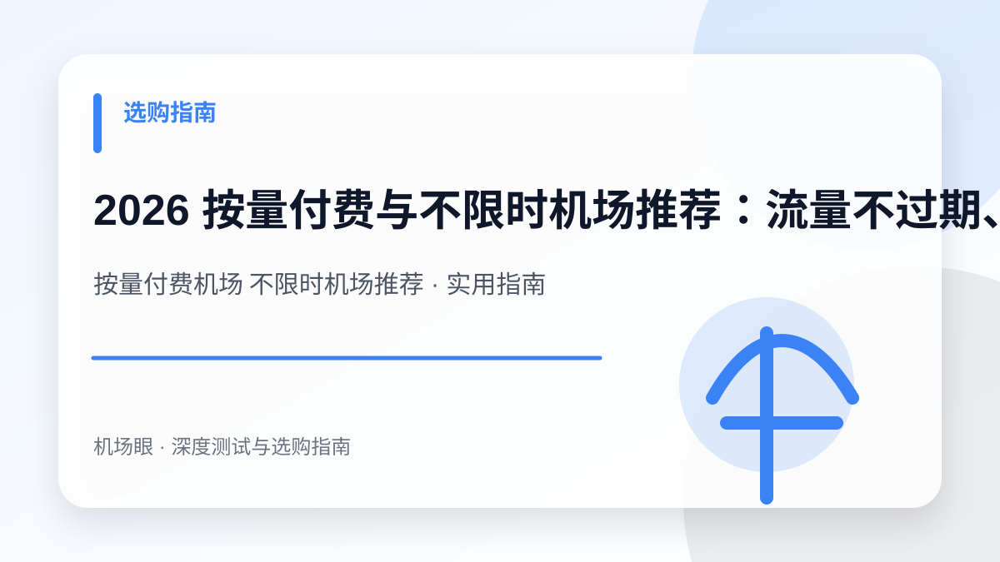

选购指南 · 2026-10-14
2026 按量付费与不限时机场推荐：流量不过期、按需扣费与备用防失联选购指南
2026 按量付费与不限时机场推荐：流量不过期、按需扣费与备用防失联选购指南。针对按量付费机场 不限时机场推荐提供深度选购与排障实战手册，涵盖架构对比、配置方案、避坑清单与故障排查技巧。
搜索“按量付费机场 不限时机场推荐”时，真正需要解决的不是单纯寻找一个服务名称，而是建立一套从网络底层逻辑、成本模型、安全风控到实战配置的完整决策体系。本文面向轻度上网、仅偶尔查阅文献、出差旅游使用或需要常备一条应急防失联线路的用户，为你深度拆解核心技术原理与实测避坑指南。
先给结论：选购与排障的核心要点
按量付费（不限时流量包）彻底打破了传统月付套餐的重置期限，流量一次购买长期有效；核心考核点在于节点倍率透明度、最小充值门槛、节点可用率与长期防失联机制。在实际网络环境中，任何节点的表现都会受到本地运营商网络、骨干网互联质量、客户端协议栈实现以及目标平台风控规则的综合制约。因此，不要盲从网上的单一测速截图，必须结合自身使用场景进行针对性验证。
为什么这个话题在 2026 年成为热搜刚需
传统包月机场存在严重的‘沉没成本’：用户每月为 100G~200G 流量付费，但实际可能只用了 10G，月底依然清零重置。2026 年越来越多轻度用户转向‘按量付费（Pay-as-you-go）’，50G 流量甚至能用半年以上。然而市场上按量机场良莠不齐，有些利用 3~5 倍高倍率暗中克扣流量，有些因资金流不稳定面临停运风险，因此选购必须兼顾成本控制与可用率保障。
典型应用场景与决策依据
例如一位高校科研人员平日在校内使用校园网，仅在周末需要查阅海外 IEEE 文献或调用 ChatGPT API；若购买 30元/月的常规套餐，一年花费 360 元却大部分闲置。选用 20 元购买 100GB 不限时流量包，搭配自动故障转移策略，作为备用线路可稳定支撑数月，既省钱又具备应急兜底能力。
按月订阅 vs 按量不限时套餐多维度对比
| 对比维度 | 常规按月订阅套餐 | 按量付费（不限时流量包） | 综合评估建议 |
|---|---|---|---|
| 有效期限制 | 每月固定重置，月底清零 | 永久有效或长达 1~2 年不过期 | 按量付费无需担心月底浪费 |
| 单 GB 成本 | 折算约 0.08 ~ 0.2 元/GB | 折算约 0.2 ~ 0.5 元/GB | 单价稍高但无闲置沉没成本 |
| 节点倍率规则 | 多为 1.0 倍标准计费 | 常见 0.5 ~ 3.0 倍浮动计费 | 必须重点核实主力节点扣费倍率 |
| 线路可用率 | 高优先级 IEPL 专线保障 | 中转/专线混合，故障恢复稍慢 | 适合作为第二备用兜底源 |
| 典型适用人群 | 重度 4K 追剧、全天远程办公 | 轻度文字查阅、差旅、防失联备用 | 双持“主力月付+按量备用”体验最佳 |
按量付费机场的四大“隐藏陷阱”与深度排查
在选购不限时机场时，许多新手只看表面“10元 100G”的宣传，忽略了背后的扣费规则，极易踩坑：
- 高倍率吸血陷阱：部分不良机场虽然标称给 100G 流量，但所有常用香港、日本节点倍率均设为 3.0 或 5.0 倍！这意味着你实际只能使用 20G 流量。购买前务必进入后台查看节点列表，确认是否存在 1.0 倍或更低倍率的常用节点。
- 休眠账号自动注销条款：某些站点在服务条款（TOS）中夹带私货，规定“连续 30 天或 60 天无任何登录与流量消耗，系统将自动回收账号”。这直接违背了“不限时”的承诺。选购时必须确认是否具有账号长效保留机制。
- 入口频更与防失联能力薄弱：由于按量用户 ARPU（客单价）较低，经营者对按量集群的线路冗余投入往往少于主力集群。若缺乏多入口 BGP 容灾，一旦入口被封，恢复周期漫长。因此必须挑选拥有独立 Telegram 播报群与多域名订阅解析的站点。
- 无门槛大额充值卷款风险：警惕提供“1000G 终身 50 元”夸张促销的不知名新站。这类产品往往旨在短期吸筹，资金链无法覆盖长期的海缆带宽成本。按量付费单次充值金额建议控制在 20~50 元以内，用完再充。
实战技巧：利用 Clash / Sing-box 构建“按量容灾自动切换”
最科学的使用姿势，是将按量机场配置为主力机场的 Fallback（故障自动转移） 备选节点池：
# Clash 策略组容灾配置示例
proxy-groups:
- name: "🚀 主力智能选择"
type: fallback
url: "https://www.gstatic.com/generate_204"
interval: 300
tolerance: 50
proxies:
- "香港 IEPL-主力01" # 优先使用主力月付线路
- "日本 IEPL-主力02"
- "按量备用-HK-1.0x" # 主力全挂时自动无缝接管，避免按量平时浪费流量通过该配置，平时所有大流量视频由主力月付套餐承担；一旦发生骨干网波动或主力节点离线，客户端在 5 秒内自动切换至按量节点，确保会议与工作永不中断。
选购与实测需要关注的四个核心指标
- 节点列表明确标注各地区倍率，且存在大量 1.0 倍及以下主力节点
- 官方 TOS 明确承诺不因短期不使用而恶意注销账户或清空余额
- 支持小额（10~30 元）体验充值，不强迫绑定高额充值包
- 支持多协议导入并具备专属应急防失联订阅更新域名
推荐的标准化实操流程
- 先盘点每月真实海外流量需求（通过客户端历史统计数据查看）
- 购买最低档位（10~20 元）按量包，验证常用地区测速与倍率是否属实
- 在晚高峰时段测试备用节点的可用率与流媒体/AI 解锁情况
- 在 Clash 或 Sing-box 中配置 Fallback 策略组，实现故障自动降级切换
最常见的四个认知误区与避坑建议
- 只看流量总额却忽视了 3~5 倍的高倍率扣费陷阱
- 单次充值上百元购买数千 GB 所谓的永久不过期套餐
- 长期不更新订阅地址导致节点失效后误以为机场跑路
- 将按量节点用来挂机下载数十 GB 的大型 BT 种子
常见问题深度解答 (FAQ)
按量付费机场的节点能用来解锁 Netflix 和 ChatGPT 吗？
取决于机场落地机房的 IP 纯净度。优质按量机场与主力月付共享出口机房，同样可以解锁 4K 流媒体与 AI 工具；购买前可在节点倍率表中确认是否标注了原生解锁。
为什么我的按量流量明明没怎么用却扣得很快？
请立即排查三点：第一，所选节点是否为 2x~3x 高倍率；第二，操作系统后台是否有 Windows Update、OneDrive 或 iCloud 在悄悄同步走代理；第三，是否开启了全局模式（Global）而非规则分流（Rule）。
按量付费机场适合打游戏或者远程办公吗？
非常适合作为办公备用。但如果用来下载上百 G 的 3A 大作游戏，按量流量消耗极快，成本将远高于包月套餐；建议游戏下载走直连或月付套餐，仅将按量用于联机加速与登录校验。
总结与下一步建议
面对日益复杂的网络监管环境与海外平台风控策略，按量付费机场 不限时机场推荐的关键在于回归需求本质——不要试图用单一廉价方案解决所有问题。合理建立“主力专线 + 备用容灾 + 协议分流”的弹性架构，才能在多变的环境中获得长期稳定体验。